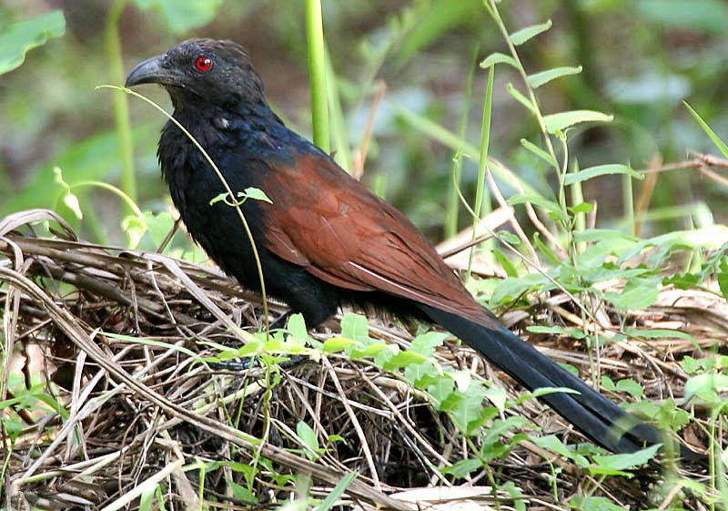

महोखGreater Coucal
Centropus sinensis · Cuculidae · BRD-0034

- Scientific name
- Centropus sinensis (Stephens, 1815)
- Family
- Cuculidae
- Hindi
- महोख
- Status here
- native
- IUCN
- LC
When to look कब देखें
Present all year.
महोख / Greater Coucal
Centropus sinensis (Stephens, 1815) — Cuculidae
महोख (ग्रेटर कौकल) — पूर्वी उत्तर प्रदेश के गन्ने के खेतों, झाड़ियों, बागों के किनारों और दलदली इलाकों में पाया जाने वाला एक बड़ा, भारी और तीतर के आकार का निवासी पक्षी है। यद्यपि यह कोयल परिवार (Cuculidae) का सदस्य है, लेकिन यह अन्य कोयलों की तरह दूसरे पक्षियों के घोंसले में अंडे नहीं देता (not a brood parasite), बल्कि अपना घोंसला खुद बनाता है और बच्चों की देखभाल करता है। इसकी मुख्य पहचान इसका चमकीला कोयले जैसा काला शरीर, गहरे लाल-तांबे जैसे भूरे रंग के पंख (chestnut-brown wings) और बड़ी चमकदार लाल आँखें (ruby-red eyes) हैं। यह जमीन पर भारी कदमों से चलता हुआ बड़े कीड़ों, मेंढकों और छोटे साँपों का शिकार करता है। इसकी गहरी, गूंजने वाली "कूप-कूप-कूप" की आवाज़ मानसून के दिनों में ग्रामीण अंचलों में गूंजती है।
Quick Identification त्वरित पहचान
| Feature | Description |
|---|---|
| Size | Large, heavy bird (47–52 cm total length); resembling a pheasant or crow with a long tail |
| Colouration | Glossy black body, head, and tail; contrasting bright chestnut-copper wings |
| Eyes | Diagnostic, prominent ruby-red or crimson-red eyes in adults |
| Bill | Strong, black, down-curved bill; similar to a crow but more hooked |
| Flight | Clumsy and weak; alternate flapping and gliding, landing heavily in low bushes |
| Foraging | Walks on the ground or hops through low branches, cocking its long tail |
Field tip: Look along sugarcane fields or rural roadsides at dawn. Watch for a large, glossy black bird with copper wings walking slowly in the grass. Its deep, resonant booming call, which sounds like air blown over a bottle, is a classic monsoon sound.
Morphology आकारिकी
Biometrics (typical measurements in the northern Indian plains):
| Measurement | Range |
|---|---|
| Total length | 470–520 mm |
| Wing (flattened chord) | 190–225 mm |
| Tail | 230–280 mm |
| Tarsus | 50–60 mm |
| Bill (culmen from base) | 40–48 mm |
| Weight | 230–300 g |
Plumage: The head, neck, mantle, underparts, and tail are deep, glossy black with blue and purple iridescence. The wings and upper back (scapulars) are bright chestnut-brown or copper-bronze. The underwing coverts are black. Juveniles are duller, with blackish bars on the wings and pale bars on the underparts.
Bare parts: The stout, arched bill is black. The irises are bright ruby-red (greyish-brown in juveniles). The long legs, feet, and strong claws are black. The hind toe has a long, straight claw resembling a lark's spur, which helps it walk on marshy grass.
Vocalisations
Greater Coucals are highly vocal during the pre-monsoon and monsoon.
- Breeding Song: A deep, resonant, booming series of notes: coop-coop-coop-coop, which accelerates and descends slightly. It is often performed as a duet by breeding pairs.
- Alarm Call: A harsh, dry, scolding hiss or growl: kruaaah or tsheee, given when disturbed.
Ecological Role पारिस्थितिक भूमिका
Terrestrial generalist predator.
- Pest controller: They actively hunt on the ground, consuming large beetles, snails, and caterpillars that plague sugarcane and wheat crops.
- Predator of small vertebrates: They control populations of small lizards, frogs, and rodents.
- Non-parasitic nesting niche: Unlike parasitic cuckoos, their nest building creates dense twig structures in bushes that occasionally provide shelter for other small birds after the coucal breeding season.
Life Cycle / Phenology जीवन चक्र
- Breeding season: June to September, aligned with the heavy monsoon rains.
- Nesting: They are monogamous and build a large, dome-shaped nest of twigs, leaves, and bamboo grass.
- Nest site: Hidden in dense thorny bushes, sugarcane clumps, or low forks of dense trees.
- Clutch size: 3 to 4 chalky-white eggs.
- Incubation: 15–16 days, shared by both parents.
- Fledging: Both parents feed the young. Chicks are born blind and covered in white hair-like down. They leave the nest in 18–22 days, walking in the undergrowth before they can fly.
Host Plants or Prey आहार
Primary food items:
- Insects: Grasshoppers, crickets, caterpillars, and large dung beetles (Heliocopris dominus).
- Other invertebrates: Apple snails (Pila globosa), millipedes, and freshwater crabs (Barytelphusa guerini).
- Small vertebrates: Common garden lizards (Calotes versicolor), small frogs, mice, and eggs of other ground-nesting birds.
Predators / Natural Enemies शत्रु
- Carnivores: Small Indian Mongooses (Herpestes edwardsii) and jackals (Canis aureus) prey on eggs and chicks.
- Reptiles: Bengal Monitors (Varanus bengalensis) and large cobras raid nests.
- Raptors: Large eagles occasionally target adults foraging in open fields.
Agricultural / Human Relevance कृषि प्रासंगिकता
Beneficial predator. In sugarcane-growing areas of Basti, they are highly valued by farmers as they eat large insect pests and rodents.
In local folklore, the mahokh is associated with deep rain; its loud calls are believed to predict the arrival of heavy monsoon showers. In traditional village medicine, there are unfortunately myths about its flesh curing joint pain, leading to occasional poaching, which requires active conservation awareness.
Expected Locally स्थानीय रूप से अपेक्षित
Not a field record. Written from published accounts for eastern Uttar Pradesh. No confirmed local sighting yet — if you have seen it, that is what the atlas needs.
अभी तक स्थानीय पुष्टि नहीं। यह विवरण प्रकाशित स्रोतों से है, किसी अवलोकन से नहीं।
A common sight along the canal banks and sugarcane fields of Basti district. They are frequently seen walking slowly along crop boundaries, hunting for snails. Their low, booming duets are a constant presence during July and August. They are clumsy fliers; when crossed by a vehicle, they often glide weakly across the road and crash-land into the opposite bushes.
Distribution वितरण
Global range: Widespread across India, Pakistan, Nepal, Southern China, and Southeast Asia.
In India: Found throughout the plains and lowlands.
In Uttar Pradesh: Common resident in all agricultural, riverine, and rural forested patches.
In Basti district / eastern UP: Abundant along irrigation canals, crop fields, and rural grasslands.
Research Questions शोध प्रश्न
Anyone can investigate these | कोई भी इन प्रश्नों की जाँच कर सकता है
- How do Coucals break the shell of apple snails before eating them? — Observe foraging behavior near water bodies.
- What is the nesting success of Coucals in sugarcane fields compared to thorny village thickets? — Map and monitor nests.
- Do Coucal pairs coordinate their booming calls to defend territory size in Basti orchards? — Record and analyze call timing between mates.
- How does the presence of Coucals affect the abundance of grasshoppers in organic vs. pesticide-treated fields? / जैविक बनाम कीटनाशक-युक्त खेतों में महोख की उपस्थिति टिड्डों की संख्या को कैसे प्रभावित करती है? — Survey prey populations.
- What is the foraging distance of breeding adults from their nesting sites during the monsoon? / मानसून के दौरान प्रजनन करने वाले वयस्कों की अपने घोंसले से भोजन खोजने की दूरी कितनी होती है? — Trace foraging ranges in villages.
Similar Species मिलती-जुलती प्रजातियाँ
| Species | Key Difference | हिंदी |
|---|---|---|
| Lesser Coucal (Centropus bengalensis) | Much smaller (38 cm); paler plumage; wings have darker bars; prefers wet grasslands, rare in Basti | छोटा महोख — आकार में काफी छोटा, दुर्लभ |
| House Crow (Corvus splendens) | Completely different shape; slate-grey neck; thin bill; active flyer; no copper wings | कौआ — स्लेटी गर्दन, अलग चोंच, पंख तांबे के नहीं |
| Jungle Crow (Corvus macrorhynchos) | Entirely black body (lacks chestnut wings); dark eyes; sharp caw calls; flies actively | जंगली कौआ — पूरा काला शरीर, काली आँखें, काँव-काँव की आवाज़ |
Field rule: Pheasant-like shape, glossy black body contrasting with bright chestnut wings, bright red eyes, and a slow walking habit on the ground identify the Greater Coucal.
Taxonomy & Classification वर्गीकरण
Original description. James Francis Stephens described the Greater Coucal as Polophilus sinensis in 1815 in Shaw's General Zoology (Vol. 9, Part 1, p. 51). The type locality was China. The genus name Centropus was introduced by Illiger in 1811, derived from the Greek kentron (spur) and pous (foot), referring to the straight claw on the hind toe. The specific name sinensis refers to China, the type locality.
Subspecies. Six subspecies are recognized. The subspecies found in northern India is:
| Subspecies | Authority | Range | Notes |
|---|---|---|---|
| C. s. sinensis | (Stephens, 1815) | India, Pakistan, Nepal, China | UP subspecies; nominate form; glossy black plumage with large chestnut wings |
Family and order placement. Placed in the order Cuculiformes, family Cuculidae, subfamily Centropodinae (coucals).
Phylogenetic notes. Unlike most cuckoos, coucals form an early-diverging lineage that has retained nesting and parental behaviors.
IUCN status rationale. Listed as Least Concern (LC) due to its extremely large range, high adaptability to sugarcane agriculture, and large population.
Photo Gallery फोटो गैलरी
References संदर्भ
- Stephens, J. F. (1815). General Zoology, or Systematic Natural History. Vol. 9, Part 1. G. Kearsley, London, p. 51. [original description]
- Ali, S. & Ripley, S. D. (1999). Handbook of the Birds of India and Pakistan. Vol. 3. Oxford University Press, New Delhi.
- Grimmett, R., Inskipp, C. & Inskipp, T. (2011). Birds of the Indian Subcontinent. 2nd ed. Christopher Helm, London.
- Payne, R. B. (2005). The Cuckoos. Oxford University Press, Oxford.
- BirdLife International (2024). Centropus sinensis. IUCN Red List of Threatened Species. Ver. 2024.
- GBIF Occurrence Data — Centropus sinensis, Uttar Pradesh (2010–2025).
Source file: species/fauna/birds/greater_coucal.md